Content
- Quick recap’
- Theory :
- Statistical inference
- T-tests
- OLS regression
- Exercices
Session 2
summary(), IQR(),hist(), ggplot()+geom_density(), barplot()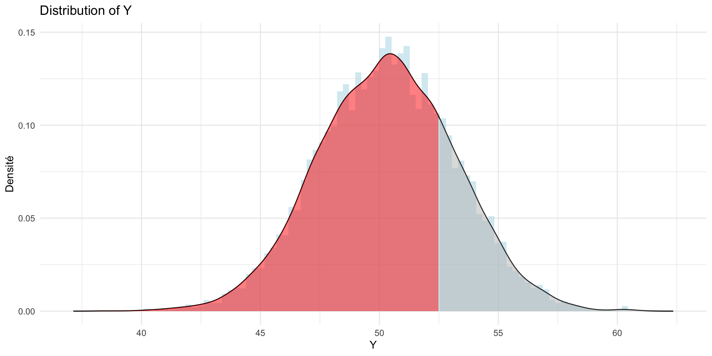
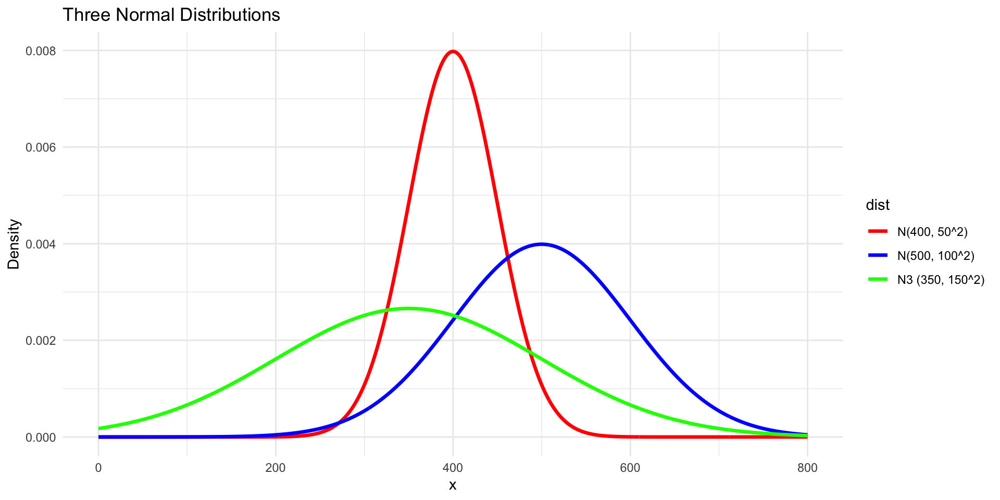
\[\begin{equation} \mathcal{N}(x; 1.5, 1) \end{equation}\]
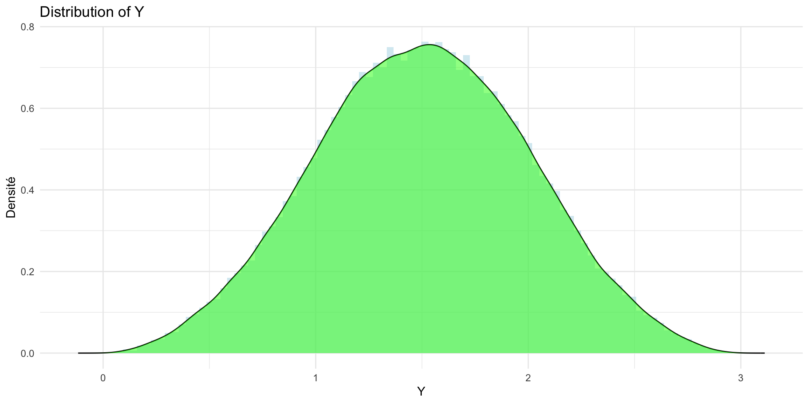
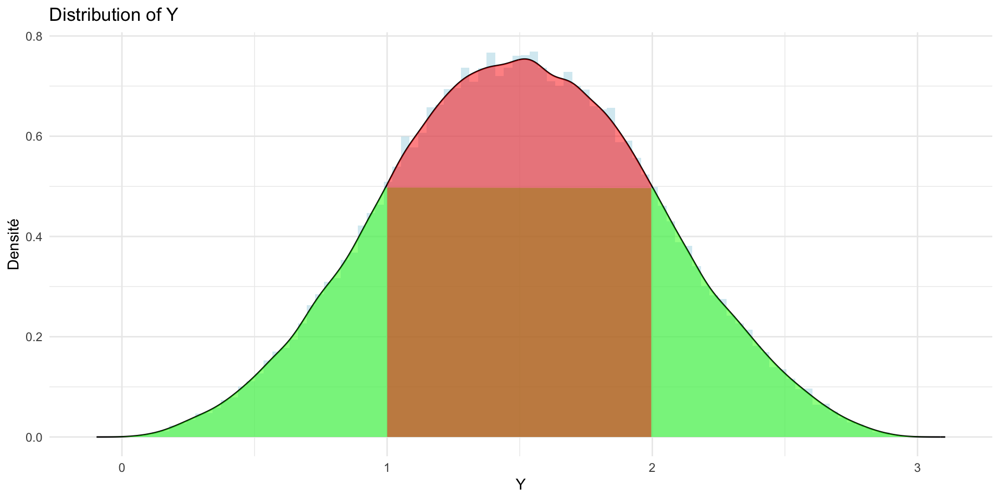
Population and Sample
\[\begin{equation} \bar{x} - z_{1-\alpha/2}\,\frac{\sigma}{\sqrt{n}} \le \mu \le \bar{x} + z_{1-\alpha/2}\,\frac{\sigma}{\sqrt{n}} \end{equation}\]
\[\begin{equation} \bar{x} - z_{1-\alpha/2}\,\frac{\sigma}{\sqrt{n}} \le \mu \le \bar{x} + z_{1-\alpha/2}\,\frac{\sigma}{\sqrt{n}} \end{equation}\]
my_sample <- sample(log_median_inc, 40, replace = FALSE)
mean_x <- mean(my_sample, na.rm = TRUE)
sd(my_sample, na.rm =TRUE)[1] 0.1957132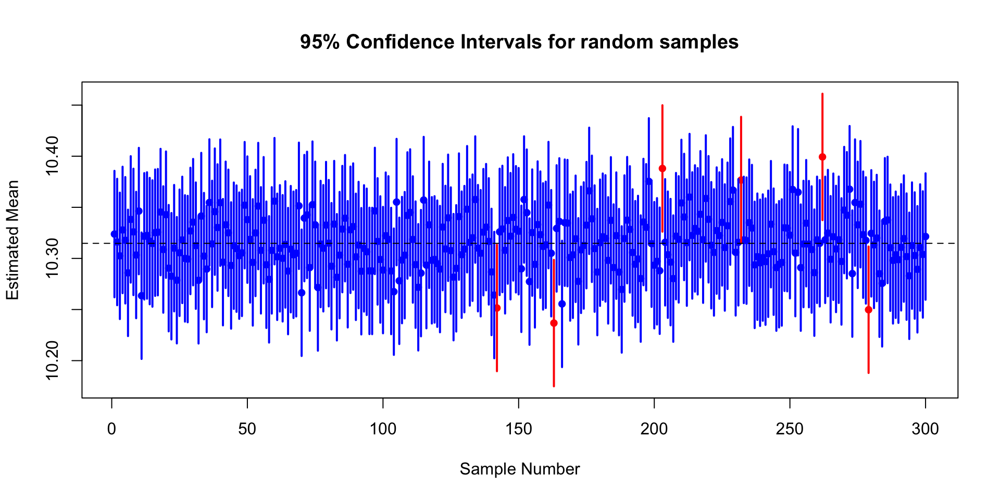
\[\begin{equation} \bar{x} \pm t_{1-\alpha/2,n-1}\,\frac{s}{\sqrt{n}}. \end{equation}\]
One Sample t-test
data: sample_data
t = -10.386, df = 149, p-value < 2.2e-16
alternative hypothesis: true mean is not equal to 10.4631
95 percent confidence interval:
10.25798 10.32356
sample estimates:
mean of x
10.29077 # Split data by urban and rural communes
urban_income <- sample(log((data_dem %>% filter(dens == "Urbain dense" | dens == "Urbain intermédiaire"))$revmoyfoy), 150, replace = FALSE)
rural_income <- sample(log((data_dem %>% filter(dens == "Rural"))$revmoyfoy), 150, replace = FALSE)
# Perform a two-sample t-test
t_test_urban_rural <- t.test(urban_income,
rural_income,
alternative = "two.sided",
var.equal = FALSE,
conf.level = 0.95)
# Display the result
t_test_urban_rural
Welch Two Sample t-test
data: urban_income and rural_income
t = 3.9075, df = 292.75, p-value = 0.0001159
alternative hypothesis: true difference in means is not equal to 0
95 percent confidence interval:
0.05493876 0.16644186
sample estimates:
mean of x mean of y
10.44437 10.33368 t.test() allows you to analyse :
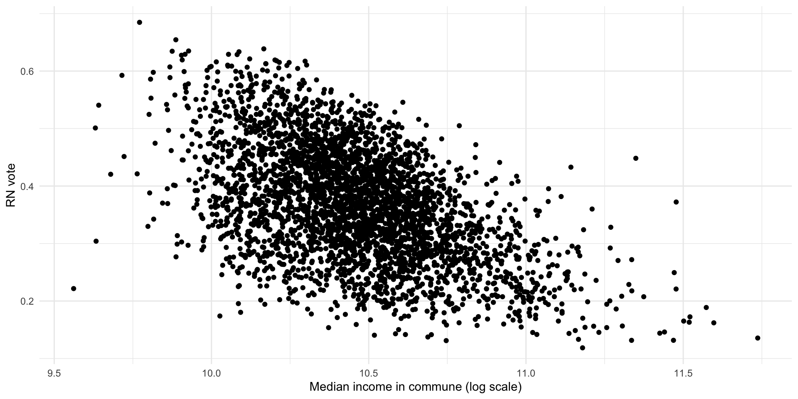
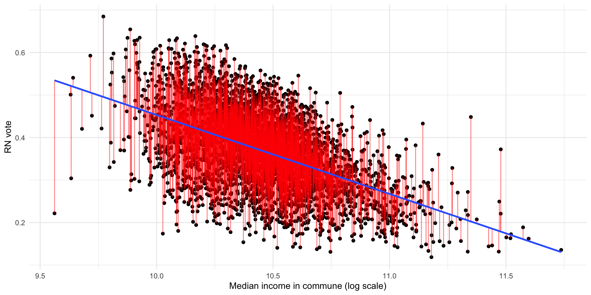
lmsummary gives you the valueselec_urbin <- elections2024 %>% filter(dens == "Urbain intermédiaire")
model1 <- lm(data = elec_urbin, far_right_relvotes ~ log(revmoyfoy))
summary(model1)
Call:
lm(formula = far_right_relvotes ~ log(revmoyfoy), data = elec_urbin)
Residuals:
Min 1Q Median 3Q Max
-0.312869 -0.059556 0.000578 0.061612 0.245735
Coefficients:
Estimate Std. Error t value Pr(>|t|)
(Intercept) 2.310232 0.054997 42.01 <2e-16 ***
log(revmoyfoy) -0.185713 0.005257 -35.33 <2e-16 ***
---
Signif. codes: 0 '***' 0.001 '**' 0.01 '*' 0.05 '.' 0.1 ' ' 1
Residual standard error: 0.08438 on 3490 degrees of freedom
Multiple R-squared: 0.2634, Adjusted R-squared: 0.2632
F-statistic: 1248 on 1 and 3490 DF, p-value: < 2.2e-16elec_urbin <- elections2024 %>% mutate(psup = if_else(pact > 0, sup / pact, NA_real_))
model2 <- lm(data = elec_urbin %>% filter(dens == "Urbain intermédiaire"), far_right_relvotes ~ log(revmoyfoy) + psup)
summary(model2)
Call:
lm(formula = far_right_relvotes ~ log(revmoyfoy) + psup, data = elec_urbin %>%
filter(dens == "Urbain intermédiaire"))
Residuals:
Min 1Q Median 3Q Max
-0.30604 -0.05640 -0.00183 0.05605 0.35688
Coefficients:
Estimate Std. Error t value Pr(>|t|)
(Intercept) 1.663218 0.059892 27.77 <2e-16 ***
log(revmoyfoy) -0.116205 0.005913 -19.65 <2e-16 ***
psup -0.112047 0.005232 -21.41 <2e-16 ***
---
Signif. codes: 0 '***' 0.001 '**' 0.01 '*' 0.05 '.' 0.1 ' ' 1
Residual standard error: 0.07934 on 3489 degrees of freedom
Multiple R-squared: 0.349, Adjusted R-squared: 0.3486
F-statistic: 935.1 on 2 and 3489 DF, p-value: < 2.2e-16In this exercise, we are interested in understanding what explains trust in parliament (trstprl). The main factors considered are Education level (eduyrs), Political interest (polintr), Media Use (tvtot, netusoft);
library(rio)
#1.0
ESS_11 <- import("https://github.com/paulservais-1/methods_policyevaluation/raw/main/dataexos/ESS11_data/ESS11.csv")
#1.1
summary(ESS_11 %>% select("trstprl","eduyrs","polintr","netusoft")) trstprl eduyrs polintr netusoft
Min. : 0.000 Min. : 0.00 Min. :1.000 Min. :1.000
1st Qu.: 3.000 1st Qu.:11.00 1st Qu.:2.000 1st Qu.:4.000
Median : 5.000 Median :13.00 Median :3.000 Median :5.000
Mean : 6.205 Mean :14.26 Mean :2.633 Mean :4.221
3rd Qu.: 7.000 3rd Qu.:16.00 3rd Qu.:3.000 3rd Qu.:5.000
Max. :99.000 Max. :99.00 Max. :9.000 Max. :9.000 #1.2
data_set <- ESS_11 %>% filter(trstprl < 11 & eduyrs < 11 & netusoft < 6 & polintr < 6)
#1.3
reg1<-lm(trstprl~eduyrs,data = data_set)
summary(reg1)
Call:
lm(formula = trstprl ~ eduyrs, data = data_set)
Residuals:
Min 1Q Median 3Q Max
-4.6063 -2.1672 0.3937 1.9426 6.4914
Coefficients:
Estimate Std. Error t value Pr(>|t|)
(Intercept) 3.50858 0.12016 29.199 < 2e-16 ***
eduyrs 0.10977 0.01476 7.437 1.14e-13 ***
---
Signif. codes: 0 '***' 0.001 '**' 0.01 '*' 0.05 '.' 0.1 ' ' 1
Residual standard error: 2.723 on 7696 degrees of freedom
Multiple R-squared: 0.007136, Adjusted R-squared: 0.007007
F-statistic: 55.31 on 1 and 7696 DF, p-value: 1.141e-13
Call:
lm(formula = trstprl ~ eduyrs + polintr + netusoft, data = data_set)
Residuals:
Min 1Q Median 3Q Max
-5.9330 -2.1212 0.2352 1.8143 6.7434
Coefficients:
Estimate Std. Error t value Pr(>|t|)
(Intercept) 6.02057 0.16810 35.814 < 2e-16 ***
eduyrs 0.03545 0.01529 2.319 0.02040 *
polintr -0.72274 0.03326 -21.730 < 2e-16 ***
netusoft 0.05614 0.01764 3.183 0.00146 **
---
Signif. codes: 0 '***' 0.001 '**' 0.01 '*' 0.05 '.' 0.1 ' ' 1
Residual standard error: 2.639 on 7694 degrees of freedom
Multiple R-squared: 0.06786, Adjusted R-squared: 0.0675
F-statistic: 186.7 on 3 and 7694 DF, p-value: < 2.2e-16
======================================================================
Dependent variable:
--------------------------------------------------
trstprl
(1) (2)
----------------------------------------------------------------------
eduyrs 0.110*** 0.035**
(0.015) (0.015)
polintr -0.723***
(0.033)
netusoft 0.056***
(0.018)
Constant 3.509*** 6.021***
(0.120) (0.168)
----------------------------------------------------------------------
Observations 7,698 7,698
R2 0.007 0.068
Adjusted R2 0.007 0.068
Residual Std. Error 2.723 (df = 7696) 2.639 (df = 7694)
F Statistic 55.310*** (df = 1; 7696) 186.723*** (df = 3; 7694)
======================================================================
Note: *p<0.1; **p<0.05; ***p<0.01The Chapel Hill expert survey data is a survey that “provides information about the positioning of the leadership of 279 parties in 31 countries over the course of 2024 on ideology, policy, populism, democracy, European integration, and select EU policy questions. Country coverage includes all European Union member states except for Luxembourg – plus Iceland, Norway, Switzerland, Turkey, and the United Kingdom.2 The dataset adopts the country code and party id schema of the CHES Trend file (Jolly et al. 2022) and the Speed CHES survey on Ukraine (Hooghe et al. 2024) with extensions for newly covered parties” (see documentation of CHES).
library(rio)
library(tidyverse)
library(stargazer)
#Exercice 1
#1.1
ches <- import("https://www.chesdata.eu/s/1999-2024_CHES_dataset_means.csv")
#1.2
glimpse(ches)Rows: 1,441
Columns: 90
$ year <int> 1999, 2002, 2006, 2010, 2014, 2019, 2024, 1999…
$ country <int> 1, 1, 1, 1, 1, 1, 1, 1, 1, 1, 1, 1, 1, 1, 1, 1…
$ eastwest <int> 1, 1, 1, 1, 1, 1, 1, 1, 1, 1, 1, 1, 1, 1, 1, 1…
$ eumember <int> 1, 1, 1, 1, 1, 1, 1, 1, 1, 1, 1, 1, 1, 1, 1, 1…
$ party_id <int> 102, 102, 102, 102, 102, 102, 102, 103, 103, 1…
$ party <chr> "PS", "PS", "PS", "PS", "PS", "PS", "PS", "SP"…
$ cmp_id <int> 21322, 21322, 21322, 21322, 21322, 21322, 2132…
$ vote <dbl> 10.20, 10.20, 13.00, 13.70, 11.70, 9.46, 8.04,…
$ seat <dbl> 12.7, 12.7, 16.7, 17.3, 15.3, 13.5, 16.0, 9.3,…
$ electionyear <int> 1999, 1999, 2003, 2010, 2014, 2019, 2024, 1999…
$ epvote <dbl> 9.59, 9.59, 13.50, 10.88, 10.70, 9.74, 7.43, 8…
$ family <int> 5, 5, 5, 5, 5, 5, 5, 5, 5, 5, 5, 5, 5, 5, 7, 7…
$ govt <dbl> 1.0, 1.0, 1.0, 1.0, 0.5, 0.0, NA, 1.0, 1.0, 1.…
$ lrgen <dbl> 3.111111, 3.350000, 3.500000, 2.500000, 2.6000…
$ lrecon <dbl> 2.625000, 2.500000, 3.170000, 2.571429, 2.4000…
$ lrecon_salience <dbl> NA, NA, NA, NA, 8.400000, 8.166667, 7.444445, …
$ lrecon_dissent <dbl> NA, NA, NA, NA, NA, 2.2, 0.5, NA, NA, NA, NA, …
$ lrecon_blur <dbl> NA, NA, NA, NA, NA, 1.142857, 2.166667, NA, NA…
$ galtan <dbl> 3.875000, 4.000000, 2.830000, 2.857143, 3.4000…
$ galtan_salience <dbl> NA, NA, NA, NA, 3.200000, 4.000000, 4.750000, …
$ galtan_dissent <dbl> NA, NA, NA, NA, NA, 2.500000, 3.666667, NA, NA…
$ galtan_blur <dbl> NA, NA, NA, NA, NA, 2.750000, 2.600000, NA, NA…
$ eu_position <dbl> 6.666667, 6.090000, 5.710000, 6.200000, 6.0000…
$ eu_salience <dbl> 4.722222, 4.533333, 4.300000, 4.523810, 3.2000…
$ eu_dissent <dbl> 1.388889, 2.111111, 3.430000, 2.461539, 3.0000…
$ eu_blur <dbl> NA, NA, NA, NA, NA, 2.166667, 3.333333, NA, NA…
$ spendvtax <dbl> NA, NA, 2.670000, 1.692308, 2.400000, 2.000000…
$ spendvtax_salience <dbl> NA, NA, 6.500000, 7.615385, NA, NA, NA, NA, NA…
$ deregulation <dbl> NA, NA, 2.330000, 2.375000, 2.000000, 2.000000…
$ dereg_salience <dbl> NA, NA, 6.830, 4.500, NA, NA, NA, NA, NA, 8.00…
$ redistribution <dbl> NA, NA, 2.000000, 1.818182, 1.800000, 1.583333…
$ redist_salience <dbl> NA, NA, 8.000000, 7.583333, NA, 8.166667, 8.42…
$ econ_interven <dbl> NA, NA, NA, NA, 1.750000, 1.545454, NA, NA, NA…
$ civlib_laworder <dbl> NA, NA, 3.670000, 2.636364, 2.200000, 3.090909…
$ civlib_salience <dbl> NA, NA, 6.500000, 4.727273, NA, NA, NA, NA, NA…
$ sociallifestyle <dbl> NA, NA, 2.3299999, 1.8181819, 1.6000000, 2.000…
$ social_salience <dbl> NA, NA, 5.670000, 5.090909, NA, NA, NA, NA, NA…
$ womens_rights <dbl> NA, NA, NA, NA, NA, NA, 3.000000, NA, NA, NA, …
$ lgbtq_rights <dbl> NA, NA, NA, NA, NA, NA, 1.0, NA, NA, NA, NA, N…
$ samesex_marriage <dbl> NA, NA, NA, NA, NA, NA, 2.1428571, NA, NA, NA,…
$ religious_principles <dbl> NA, NA, 1.330000, 1.454545, 1.000000, 1.500000…
$ relig_salience <dbl> NA, NA, 5.670000, 2.545455, NA, NA, NA, NA, NA…
$ immigrate_policy <dbl> NA, NA, 2.500000, 2.000000, 2.800000, 3.416667…
$ immigrate_salience <dbl> NA, NA, 6.330000, 6.083333, NA, 4.250000, 3.22…
$ immigrate_dissent <dbl> NA, NA, NA, NA, NA, 3.400000, 4.333334, NA, NA…
$ multiculturalism <dbl> NA, NA, 4.200000, 3.250000, 2.000000, 3.083333…
$ multicult_salience <dbl> NA, NA, NA, 5.545454, NA, 4.454546, 4.000000, …
$ multicult_dissent <dbl> NA, NA, NA, NA, NA, 3.5, NA, NA, NA, NA, NA, N…
$ nationalism <dbl> NA, NA, 3.170000, NA, 2.250000, 3.454546, 3.75…
$ nationalism_salience <dbl> NA, NA, 4.33, NA, NA, NA, NA, NA, NA, 4.88, NA…
$ ethnic_minorities <dbl> NA, NA, 3.170000, 2.444444, 2.000000, 2.636364…
$ ethnic_salience <dbl> NA, NA, 6.330000, 5.333333, NA, NA, NA, NA, NA…
$ urban_rural <dbl> NA, NA, 4.400000, 4.000000, 3.333333, 3.333333…
$ urban_salience <dbl> NA, NA, 3.000000, 2.142857, NA, NA, NA, NA, NA…
$ environment <dbl> NA, NA, NA, 4.9166665, 3.8000000, 4.5000000, 3…
$ enviro_salience <dbl> NA, NA, NA, 4.833334, NA, 4.363637, 4.200000, …
$ climate_change <dbl> NA, NA, NA, NA, NA, NA, 4.0, NA, NA, NA, NA, N…
$ climate_change_salience <dbl> NA, NA, NA, NA, NA, NA, 3.666667, NA, NA, NA, …
$ protectionism <dbl> NA, NA, NA, NA, NA, 6.272728, 5.750000, NA, NA…
$ regions <dbl> NA, NA, 6.170000, 5.583334, 6.600000, 6.000000…
$ region_salience <dbl> NA, NA, 7.000000, 5.083334, NA, NA, NA, NA, NA…
$ international_security <dbl> NA, NA, NA, 6.090909, 5.800000, NA, NA, NA, NA…
$ international_salience <dbl> NA, NA, NA, 3.222222, NA, NA, NA, NA, NA, NA, …
$ us <dbl> NA, NA, 2.67, NA, NA, NA, NA, NA, NA, 2.71, NA…
$ us_salience <dbl> NA, NA, 3.50, NA, NA, NA, NA, NA, NA, 3.29, NA…
$ eu_benefit <dbl> NA, NA, NA, 1.133333, 1.200000, NA, NA, NA, NA…
$ eu_ep <dbl> 6.333333, 6.000000, 6.500000, 6.545455, 6.4000…
$ eu_fiscal <dbl> 6.666667, NA, NA, NA, NA, NA, NA, 6.666667, NA…
$ eu_intmark <dbl> NA, 4.100000, 4.000000, 5.083333, 5.000000, 4.…
$ eu_employ <dbl> 6.555555, 6.550000, NA, NA, NA, NA, NA, 6.5555…
$ eu_budgets <dbl> NA, NA, NA, NA, 4.200, 4.250, NA, NA, NA, NA, …
$ eu_agri <dbl> NA, 4.88, NA, NA, NA, NA, NA, NA, 3.78, NA, NA…
$ eu_cohesion <dbl> 6.625000, 5.850000, 6.670000, 6.625000, 6.2500…
$ eu_environ <dbl> 5.888889, 5.000000, NA, NA, NA, NA, NA, 6.0000…
$ eu_asylum <dbl> 5.666667, 6.300000, NA, NA, NA, 5.555555, NA, …
$ eu_foreign <dbl> 6.555555, 6.330000, 5.830000, 6.333333, 6.0000…
$ eu_turkey <dbl> NA, NA, 6.000000, 5.750000, 5.500000, NA, NA, …
$ eu_russia <dbl> NA, NA, NA, NA, NA, NA, 4.500000, NA, NA, NA, …
$ russian_interference <dbl> NA, NA, NA, NA, NA, 0.1111111, NA, NA, NA, NA,…
$ anti_islam_rhetoric <dbl> NA, NA, NA, NA, NA, 2.111111, 0.000000, NA, NA…
$ people_vs_elite <dbl> NA, NA, NA, NA, NA, 3.363636, 4.000000, NA, NA…
$ antielite_salience <dbl> NA, NA, NA, NA, 2.600000, 2.181818, 4.400000, …
$ corrupt_salience <dbl> NA, NA, NA, NA, 2.250000, 1.909091, 0.500000, …
$ members_vs_leadership <dbl> NA, NA, NA, NA, NA, 7.500000, NA, NA, NA, NA, …
$ executive_power <dbl> NA, NA, NA, NA, NA, NA, 4.5, NA, NA, NA, NA, N…
$ judicial_independence <dbl> NA, NA, NA, NA, NA, NA, 1.75, NA, NA, NA, NA, …
$ mip_one <int> NA, NA, NA, NA, 13, NA, NA, NA, NA, NA, NA, 13…
$ mip_two <int> NA, NA, NA, NA, 14, NA, NA, NA, NA, NA, NA, 14…
$ mip_three <int> NA, NA, NA, NA, 17, NA, NA, NA, NA, NA, NA, 17…
$ chesversion <dbl> 2025.1, 2025.1, 2025.1, 2025.1, 2025.1, 2025.1…#1.3
ches <- ches %>% filter(year == 2024)
#1.4
ches <- ches %>% select(country, eastwest, eu_russia, civlib_laworder, samesex_marriage, nationalism, urban_rural, lrgen)
#1.5
summary(ches) country eastwest eu_russia civlib_laworder
Min. : 1.00 Min. :0.0000 Min. : 0.000 Min. : 0.500
1st Qu.: 6.00 1st Qu.:0.0000 1st Qu.: 2.000 1st Qu.: 3.000
Median :14.00 Median :1.0000 Median : 3.500 Median : 5.000
Mean :15.57 Mean :0.5633 Mean : 4.117 Mean : 5.237
3rd Qu.:24.00 3rd Qu.:1.0000 3rd Qu.: 5.750 3rd Qu.: 7.450
Max. :40.00 Max. :1.0000 Max. :10.000 Max. :10.000
NA's :2 NA's :2
samesex_marriage nationalism urban_rural lrgen
Min. : 0.000 Min. : 0.200 Min. :1.100 Min. : 0.500
1st Qu.: 1.500 1st Qu.: 3.000 1st Qu.:3.407 1st Qu.: 3.474
Median : 3.333 Median : 5.000 Median :4.833 Median : 5.818
Mean : 4.332 Mean : 5.253 Mean :4.930 Mean : 5.480
3rd Qu.: 7.182 3rd Qu.: 7.333 3rd Qu.:6.227 3rd Qu.: 7.500
Max. :10.000 Max. :10.000 Max. :9.875 Max. :10.000
NA's :11 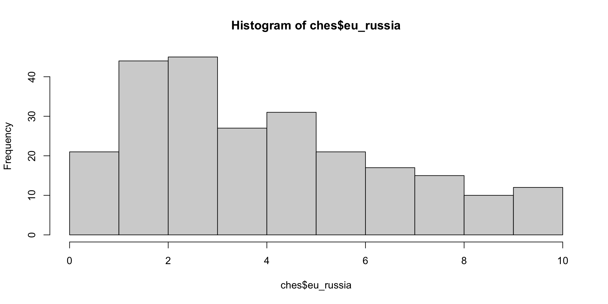
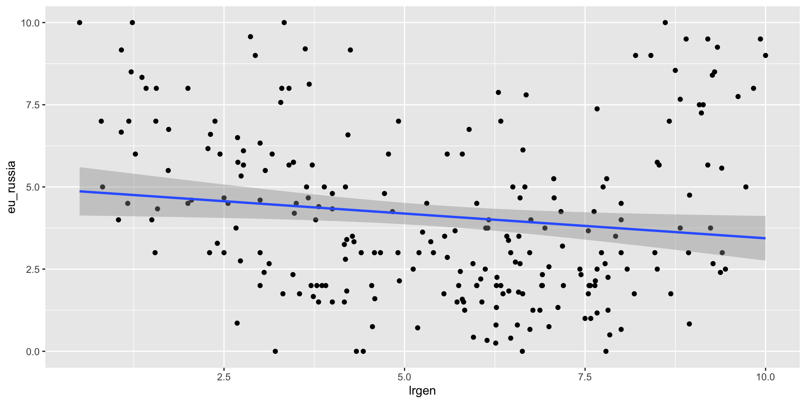
Call:
lm(formula = eu_russia ~ lrgen, data = ches)
Residuals:
Min 1Q Median 3Q Max
-4.4592 -1.9332 -0.5287 1.5507 6.3527
Coefficients:
Estimate Std. Error t value Pr(>|t|)
(Intercept) 4.94190 0.40414 12.228 <2e-16 ***
lrgen -0.15035 0.06744 -2.229 0.0267 *
---
Signif. codes: 0 '***' 0.001 '**' 0.01 '*' 0.05 '.' 0.1 ' ' 1
Residual standard error: 2.53 on 241 degrees of freedom
(2 observations deleted due to missingness)
Multiple R-squared: 0.02021, Adjusted R-squared: 0.01614
F-statistic: 4.97 on 1 and 241 DF, p-value: 0.02671#1.7.3
model2 <- lm(data = ches, eu_russia ~ lrgen + nationalism)
model3 <- lm(data = ches, eu_russia ~eastwest+ lrgen + urban_rural+ samesex_marriage)
model4 <- lm(data = ches, eu_russia ~eastwest+ lrgen + urban_rural+ samesex_marriage + nationalism)
model5 <- lm(data = ches, eu_russia ~eastwest*nationalism)
stargazer(model, model2,model3, model4,model5,
title = "EU - Russia results",
align = TRUE,
type = "text")
EU - Russia results
=========================================================================================================================================
Dependent variable:
--------------------------------------------------------------------------------------------------------------------
eu_russia
(1) (2) (3) (4) (5)
-----------------------------------------------------------------------------------------------------------------------------------------
eastwest 0.955*** 0.804** 1.659**
(0.360) (0.358) (0.729)
lrgen -0.150** -0.642*** -0.586*** -0.702***
(0.067) (0.091) (0.084) (0.092)
nationalism 0.601*** 0.308*** 0.316***
(0.082) (0.108) (0.089)
urban_rural 0.166 0.065
(0.106) (0.110)
samesex_marriage 0.424*** 0.308***
(0.082) (0.090)
eastwest:nationalism -0.250**
(0.122)
Constant 4.942*** 4.471*** 4.053*** 4.169*** 2.210***
(0.404) (0.371) (0.485) (0.480) (0.565)
-----------------------------------------------------------------------------------------------------------------------------------------
Observations 243 243 232 232 243
R2 0.020 0.200 0.212 0.239 0.053
Adjusted R2 0.016 0.194 0.198 0.223 0.041
Residual Std. Error 2.530 (df = 241) 2.291 (df = 240) 2.231 (df = 227) 2.197 (df = 226) 2.497 (df = 239)
F Statistic 4.970** (df = 1; 241) 30.060*** (df = 2; 240) 15.276*** (df = 4; 227) 14.233*** (df = 5; 226) 4.489*** (df = 3; 239)
=========================================================================================================================================
Note: *p<0.1; **p<0.05; ***p<0.01library(ggeffects)
#1.8
ggpredict(model5, terms = c("nationalism", "eastwest")) |>
as_tibble() |>
mutate(
group = factor(
group,
levels = c("1", "0"),
labels = c("East", "West")
)
) |>
ggplot(aes(x = x, y = predicted, color = group, fill = group)) +
geom_line(linewidth = 1) +
geom_ribbon(aes(ymin = conf.low, ymax = conf.high), alpha = 0.2)+ labs(x = "Nationalism", y ="Predicted position on EU-Russia")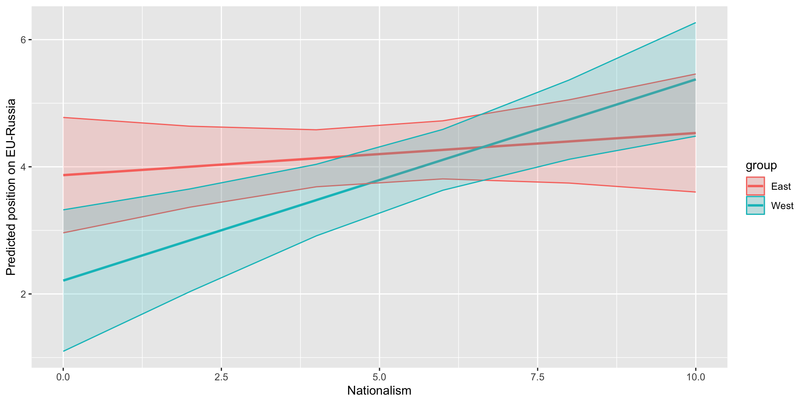
#1.9
model6 <- lm(data = ches, eu_russia ~ nationalism + civlib_laworder+ eastwest+ samesex_marriage + urban_rural + lrgen)
library(performance)
map(list(model6), check_collinearity)[[1]]
# Check for Multicollinearity
Low Correlation
Term VIF VIF 95% CI adj. VIF Tolerance Tolerance 95% CI
eastwest 1.56 [1.35, 1.89] 1.25 0.64 [0.53, 0.74]
samesex_marriage 4.11 [3.34, 5.14] 2.03 0.24 [0.19, 0.30]
urban_rural 2.16 [1.81, 2.65] 1.47 0.46 [0.38, 0.55]
lrgen 2.66 [2.20, 3.29] 1.63 0.38 [0.30, 0.45]
Moderate Correlation
Term VIF VIF 95% CI adj. VIF Tolerance Tolerance 95% CI
nationalism 6.25 [5.01, 7.89] 2.50 0.16 [0.13, 0.20]
civlib_laworder 7.07 [5.64, 8.93] 2.66 0.14 [0.11, 0.18]OK: Error variance appears to be homoscedastic (p = 0.089).You are provided with data about the legislative and the presidential elections in France, in 2022, as well as socio-demographic data on French communes in 2022, for LR (coded as “right”) and RN (“far-right”).
#2.1
elections_2022 <- import("https://github.com/scpo-quantimethods/quantitative_methods_two/raw/main/exercices/exercices1/data/elections_2022.csv")
socio_demo <- import("https://github.com/scpo-quantimethods/quantitative_methods_two/raw/main/exercices/exercices1/data/soc_dem_2022.csv")
#2.2
glimpse(elections_2022)Rows: 68,800
Columns: 9
$ codecommune <int> 1001, 1001, 1002, 1002, 1004, 1004, 1005, 1005, 100…
$ codedep <int> 1, 1, 1, 1, 1, 1, 1, 1, 1, 1, 1, 1, 1, 1, 1, 1, 1, …
$ election_type <chr> "L", "P", "L", "P", "L", "P", "L", "P", "L", "P", "…
$ Year <int> 2022, 2022, 2022, 2022, 2022, 2022, 2022, 2022, 202…
$ far_right_relvotes <dbl> 0.2566372, 0.2865385, 0.0625000, 0.1345029, 0.20588…
$ far_right_votes <int> 87, 149, 8, 23, 826, 1646, 197, 352, 8, 16, 243, 49…
$ turnout <dbl> 0.5263975, 0.8062016, 0.5871560, 0.8028169, 0.45364…
$ right_relvotes <dbl> 0.17404130, 0.05000000, 0.10937500, 0.04678363, 0.0…
$ right_votes <int> 59, 26, 14, 8, 351, 309, 69, 48, 17, 9, 50, 77, 52,…Rows: 34,596
Columns: 43
$ codecommune <chr> "01001", "01002", "01004", "01005", "01006", "0100…
$ Year <int> 2022, 2022, 2022, 2022, 2022, 2022, 2022, 2022, 20…
$ codedep <chr> "01", "01", "01", "01", "01", "01", "01", "01", "0…
$ agri <int> 0, 0, 4, 11, 0, 15, 0, 0, 29, 11, 11, 2, 0, 11, 0,…
$ indp <int> 39, 39, 142, 37, 0, 39, 19, 41, 36, 0, 0, 0, 119, …
$ cadr <int> 33, 9, 678, 56, 0, 250, 18, 0, 58, 2, 0, 18, 19, 1…
$ pint <int> 14, 0, 1647, 192, 34, 311, 83, 95, 98, 78, 0, 13, …
$ empl <int> 86, 66, 1211, 185, 23, 339, 83, 21, 197, 17, 53, 1…
$ ouvr <int> 147, 0, 1235, 177, 23, 268, 122, 4, 154, 3, 68, 42…
$ chom <int> 26, 9, 427, 18, 0, 95, 7, 2, 47, 9, 9, 0, 22, 37, …
$ pact <int> 319, 114, 4917, 658, 80, 1222, 325, 161, 572, 111,…
$ age <dbl> 44.20355, 36.97382, 39.07810, 43.10032, 44.01273, …
$ popf <int> 380, 128, 7490, 802, 56, 1613, 391, 191, 601, 173,…
$ francais <int> 776, 256, 12645, 1700, 107, 2867, 743, 316, 1111, …
$ etranger <int> 4, 1, 1248, 23, 5, 64, 18, 8, 37, 5, 5, 0, 402, 11…
$ prixbien <dbl> 231440.42, 136645.75, 190080.39, 228015.31, 172697…
$ capitalratio <dbl> 1.0423332, 0.6154085, 0.8560610, 1.0269077, 0.7777…
$ npropri <int> 345, 102, 3000, 464, 51, 845, 255, 149, 387, 126, …
$ nlogement <int> 418, 126, 7209, 604, 77, 1094, 354, 182, 524, 147,…
$ pop <int> 747, 288, 14375, 1717, 116, 3057, 797, 325, 1300, …
$ revmoyfoy <dbl> 35802.43, 36150.97, 29982.14, 37242.09, 31769.92, …
$ revtot <dbl> 1.277961e-05, 3.862623e-06, 2.096039e-04, 2.853238…
$ recetteimpotslocaux <dbl> 233.1938, 240.6562, 503.5779, 355.4615, 312.5804, …
$ recette <dbl> 608.9172, 796.6805, 1067.3215, 651.9904, 1026.0869…
$ baseimpotslocaux <dbl> 1905.169, 2244.090, 2895.855, 1900.238, 2077.438, …
$ nodip <int> 319, 57, 5361, 817, 0, 1026, 201, 69, 532, 124, 20…
$ sup <int> 134, 15, 2884, 208, 1, 642, 201, 182, 197, 87, 9, …
$ Libellé <chr> "L'Abergement-Clémenciat", "L'Abergement-de-Varey"…
$ Exploitations <int> 11, 2, 2, 9, NA, 17, NA, 6, 10, 3, 5, 4, NA, 13, 4…
$ Personnes <int> 21, 6, 3, 17, NA, 30, NA, 13, 17, 6, 9, 15, NA, 19…
$ UTA <int> 16, 6, 2, 11, NA, 25, NA, 9, 8, 7, 5, 16, NA, 8, 9…
$ SAU <int> 889, 195, 71, 821, NA, 1888, NA, 122, 326, 584, 25…
$ PBS <lgl> NA, NA, NA, NA, NA, NA, NA, NA, NA, NA, NA, NA, NA…
$ dens <chr> "Rural", "Rural", "Urbain intermédiaire", "Rural",…
$ densaav <chr> "Rural non périurbain", "Rural non périurbain", "U…
$ dens7 <chr> "Rural à habitat dispersé", "Rural à habitat dispe…
$ ntot <int> 345, 123, 5344, 676, 80, 1317, 332, 163, 619, 120,…
$ pagri <dbl> 0.000000000, 0.000000000, 0.000748503, 0.016272189…
$ pindp <dbl> 0.11304348, 0.31707317, 0.02657186, 0.05473373, 0.…
$ pcadr <dbl> 0.09565217, 0.07317073, 0.12687126, 0.08284024, 0.…
$ ppint <dbl> 0.04057971, 0.00000000, 0.30819611, 0.28402367, 0.…
$ pempl <dbl> 0.24927536, 0.53658537, 0.22660928, 0.27366864, 0.…
$ pouvr <dbl> 0.42608696, 0.00000000, 0.23110030, 0.26183432, 0.…#2.3
elections <- elections_2022 %>% left_join(
socio_demo %>% mutate(codecommune= as.numeric(codecommune), codedep = as.numeric(codedep)) %>% drop_na(codecommune))
#2.4
library(gridExtra)
plot1 <- ggplot(data = elections, aes(x=turnout, color = election_type)) + geom_density()
plot2 <- ggplot(data = elections, aes(x=far_right_relvotes, color = election_type)) + geom_density()
plot3 <- ggplot(data = elections, aes(x=right_relvotes, color = election_type)) + geom_density()
grid.arrange(plot1, plot2, plot3, ncol=3)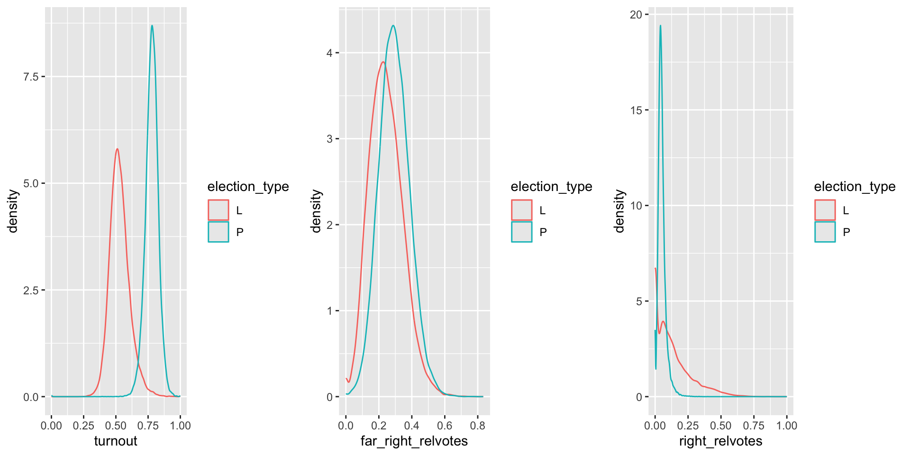
#2.5
# Taking the % of blue-collar workers (pouvr), the % of university graduates (psup), the % of foreigners (petr), the log of median income in the commune
elections <- elections %>% filter(pop>0) %>% mutate(petr = etranger/pop, psup = sup/pop)
model1 <- lm(data = elections, far_right_relvotes ~ pouvr+psup+petr+log(revmoyfoy) + election_type)
model2 <- lm(data = elections, right_relvotes ~ pouvr+psup+petr+log(revmoyfoy) + election_type)
model3 <- lm(data = elections %>% filter(psup>0,pouvr>0), far_right_relvotes ~ pouvr+psup+petr+log(revmoyfoy) +turnout + election_type)
model4 <- lm(data = elections, right_relvotes ~ pouvr+psup+petr+log(revmoyfoy) + turnout + election_type)
stargazer(model1, model2,model3, model4,
title = "Electoral results",
align = TRUE,
type = "text")
Electoral results
=======================================================================================================================================
Dependent variable:
-------------------------------------------------------------------------------------------------------------------
far_right_relvotes right_relvotes far_right_relvotes right_relvotes
(1) (2) (3) (4)
---------------------------------------------------------------------------------------------------------------------------------------
pouvr 0.042*** 0.004* 0.047*** 0.006***
(0.002) (0.002) (0.002) (0.002)
psup -0.139*** -0.032*** -0.136*** -0.040***
(0.003) (0.003) (0.004) (0.003)
petr -0.450*** -0.153*** -0.576*** -0.130***
(0.009) (0.010) (0.010) (0.010)
log(revmoyfoy) -0.036*** 0.018*** -0.042*** 0.017***
(0.002) (0.002) (0.002) (0.002)
turnout -0.380*** 0.112***
(0.006) (0.006)
election_typeP 0.050*** -0.080*** 0.149*** -0.108***
(0.001) (0.001) (0.002) (0.002)
Constant 0.652*** -0.039** 0.910*** -0.098***
(0.016) (0.017) (0.018) (0.017)
---------------------------------------------------------------------------------------------------------------------------------------
Observations 68,006 68,006 54,134 68,006
R2 0.158 0.151 0.239 0.156
Adjusted R2 0.158 0.151 0.239 0.156
Residual Std. Error 0.092 (df = 68000) 0.097 (df = 68000) 0.084 (df = 54127) 0.097 (df = 67999)
F Statistic 2,556.049*** (df = 5; 68000) 2,426.356*** (df = 5; 68000) 2,832.280*** (df = 6; 54127) 2,091.824*** (df = 6; 67999)
=======================================================================================================================================
Note: *p<0.1; **p<0.05; ***p<0.01library(broom)
#Create coefficient tables for comparison
models_coefficients <- map_df(list(model3, model4), ~ tidy(.x, conf.int = T), .id = "model")
#Plotting the coefficients of each models with their confidence intervals
models_coefficients %>%
# Remove the intercept
filter(term != c("(Intercept)")) %>%
ggplot(aes(term, estimate, color = model)) +
# Add confidence intervals
geom_pointrange(aes(ymin = conf.low, ymax = conf.high), position = position_dodge(width = 0.5)) +
# Add a dashed line at 0 (0 means no effect)
geom_hline(yintercept = 0, linetype = "dashed") +
# Rotate the labels on the x axis
coord_flip() +
# Add a title and change the labels
labs(x = "Coefficient", y = NULL, title = "Coefficients of the different models") +
theme_minimal() +
scale_color_manual(labels = c("Far-right (RN)", "Right (LR)"), values = c("#00AFBB", "#E7B800"))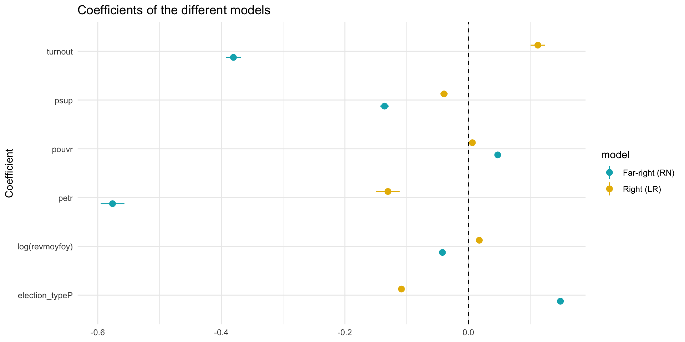
[[1]]
# Check for Multicollinearity
Low Correlation
Term VIF VIF 95% CI adj. VIF Tolerance Tolerance 95% CI
pouvr 1.10 [1.09, 1.11] 1.05 0.91 [0.90, 0.92]
psup 1.20 [1.19, 1.21] 1.09 0.84 [0.83, 0.84]
petr 1.04 [1.03, 1.05] 1.02 0.96 [0.96, 0.97]
log(revmoyfoy) 1.11 [1.10, 1.12] 1.05 0.90 [0.89, 0.91]
Moderate Correlation
Term VIF VIF 95% CI adj. VIF Tolerance Tolerance 95% CI
turnout 5.07 [5.01, 5.14] 2.25 0.20 [0.19, 0.20]
election_type 5.04 [4.97, 5.10] 2.24 0.20 [0.20, 0.20]Warning: Heteroscedasticity (non-constant error variance) detected (p < .001).
Session 2 - Relationships between variables